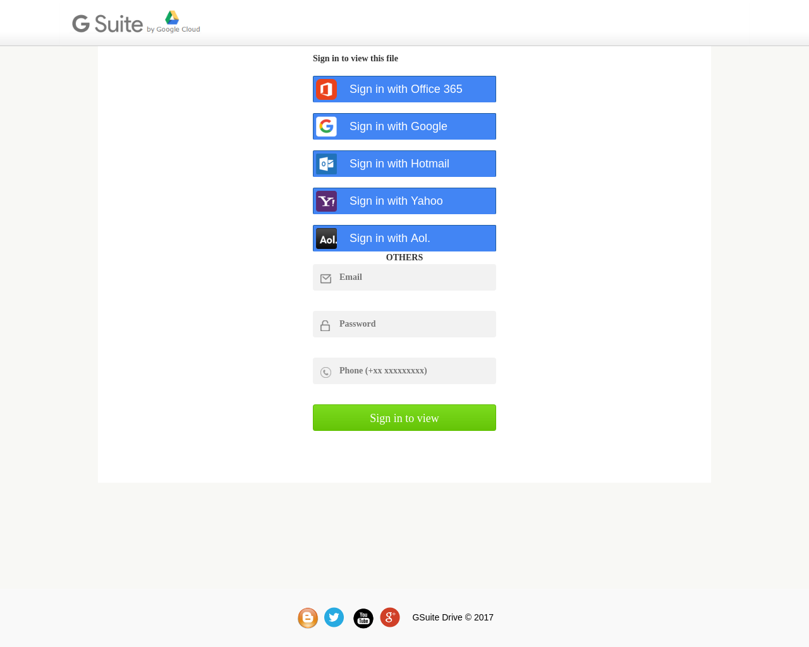

<!--
/**
 * Abuse Screenshot Utility
 * v0.1 | jsorensen | 07.19.11:40AM
 *
 * Given a URL, will grab a screenshot of the page and return it
 *
 * TO DO:
 *  [X] Currently it will not accept an 'incomplete' url. Will need to add some validation within
 *      $parseURL to force the 'http://' etc. - Completed by @gwhite 07/18
 *  [ ] Add db support to capture the URL, screenshot, timestamp, etc.
 *  [ ] Add DNS lookup info
 *  [ ] Make it pretty
 *  [ ] Add options for the screenshot; see https://github.com/spatie/browsershot
 *  [ ] Add customizable userAgent; the one we're using is MSIE as default to avoid any Chromium 0days
 *  [ ] Add pre-checking to determine if the domain is up and reachable (200 OK) prior to taking the
 *      screenshot, and send back results if the check fails for some reason.
 *  [ ] Handle remote domain timeouts
 */
-->

<!DOCTYPE html>
<html>
<head>
    <title>v2 | Abuse Screenshot Utility</title>
    <link rel="stylesheet" href="https://fonts.googleapis.com/css?family=Nunito:400,700">
    <link rel="stylesheet" type="text/css" href="link/main.css">
    <script src="../lib/jquery.min.js"></script>

    <script type="text/javascript">
        $(document).ready(function (){
            $('#submitUrl').on('submit', function (e) {
                console.log($(this).serialize());
                $("#results").empty();
                $.ajax({
                    type: 'post',
                    url: 'screenshot.php',
                    data: $(this).serialize(),
                    dataType: 'json',
                })
                .done(function(data) {
                    console.log(data);
                    $('#results').append("");
                })
                .fail(function( xhr, status, errorThrown ) {
                    alert( "Sorry, there was a problem!" );
                    console.log( "Error: " + errorThrown );
                    console.log( "Status: " + status );
                    console.dir( xhr );
                });
                e.preventDefault();
            });

        });
    </script>
</head>
<body>
    <div class="top-wrapper">
        <!-- <div id="submit-form"> -->
        <div id="form">
            <form id="submitUrl">
                <!-- <h2>Enter the URL of the page to screenshot:</h2> -->
                <div><input type="text" class="url-submit" name="url" placeholder="URL to screenshot"></div>
                <div><input type="submit" id="submit" class="button" value="Get it"></div>
                <input type='hidden' name='action' value='getScreenshot'>
            </form>
        </div>
        <div id="results" class="results-box">
            <!--  -->
        </div>
    </div>
</body>
</html>